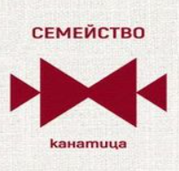

Българските традиционни везби носят със себе си дълбокo значение, което се отразява дори в тяхното позициониране по дамските и мъжките народни носии. Фолклорното разнообразие на България и множеството преплетени вярвания са довели до създаването на различни видове шевици.
Дървото на живота
Най-старата и разпознаваема везбена орнаментика в народното ни творчество е Дървото на живота. Според вярванията на българите, вечният символ на Кръговрата на живота обединява трите свята в едно „изображение“ и илюстрира връзката между небето и земята.
Короната на дървото се приема за небосвода. Там често се изобразяват Бог, ангели и птици. Земният живот заема средното място, изобразен чрез ствола на дървото. Корените, достигащи дълбоко под земята, символизират подземния свят.
Шевицата Дървото на живота се отнася към Растителните орнаменти .
Лозата
Друга изключително древна шевица е Лозата. Също част от Растителните орнаменти, тази бродерия е тясно свързана с Християнството. Символизира младостта, плодовитостта, мира, дълголетието и любовта. Вдъхновението за това богато значение идва от израза „плодовит като лоза“, гроздето и виното.
Канатица
Родовата везба Канатица е символът за семейство. Представлява надграден Маказ – към основният символ се добавят два по-малки триъгълника от двете страни, символизиращи появата на децата в новото семейство.
Разновидностите, които съществуват илюстрират разрастването на семейството.
Голяма Канатица – прибавят се още един се една двойка нови триъгълници, символизиращи появата на ново поколение (внуци).
Велика Канатица – триъгълниците се утрояват с идеята да се илюстрира разрастването и умножението на рода.
Мотивът Канатица представлява стилизирано изображение на пеперуда, която се приема и като пазител на дома и семейството. Според народните вярвания носи късмет и благополучие.
Небесна костенурка
Друг древен прабългарски знак, използван за защита, е Небесната костенурка, още Космическа костенурка и Плетеница. Символът представлява три преплетени осмици, образуващи безкраен лабиринт. Според вярванията на предците ни, това е знакът на Бог Тангра.
Шевицата Небесна костенурка изобразява съвършенството, балансът и взаимосвързаността във Вселената. Отнася се към Животинските орнаменти.
Петлето
Петелът е важен символ, присъстващ усилено в богатия български фолклор. Притежава различни значения, които се определят според употребата и случая.
Едната символика на Петлето се свързва със сватбените ритуали и вечното възпроизвеждане на живота. Използва се, за да илюстрира плодовитостта, мъжкото и женското начало.
Другото значение на Животинската шевица е съвсем различно – служи за защита от зли сили. Това тълкуване е заимствано от вярването, че кукуригането на петлите сутрин прогонва всички вампири и караконджоли, бродещи по земята през нощта.
Среща се както като самостоятелна бродерия, така и в комбинация с различни растителни елементи.
Кончето
Конят е дълбоко закодиран знак в родната народопсихология. Шевицата Кончето символизира свободата, силата и мъжеството. Този образ служи като връзка между света на хората и небесните сили.
Бродерията се отнася към Животинските орнаменти.
Меча Стъпка
Мечата стъпка е традиционна българска везба, за която се смята, че има лечебни свойства и помага при излекуването на болните. Поради тази причина тази шевица най-често се бродира на възглавниците.
Шевицата спада към тези, създаден на база Животински орнаменти.
Кръст
Според народните вярвания, преди приемането на християнската вяра, кръстният знак служел за предпазване от беди, болести и уроки. След това, шевицата приема ново значение като символ на Бог.
Везбата Кръст се причислява към Слънчевите знаци.